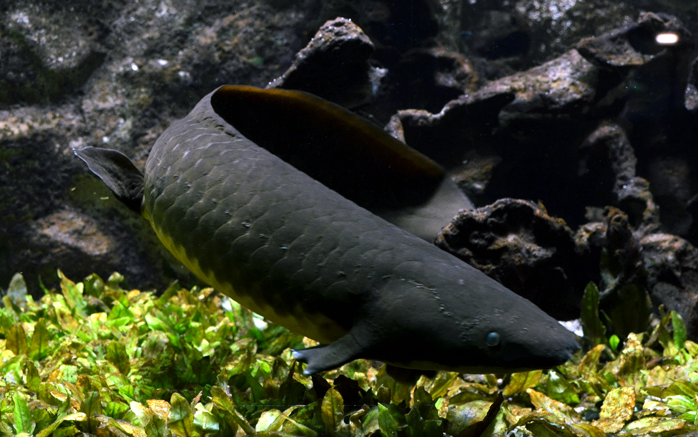
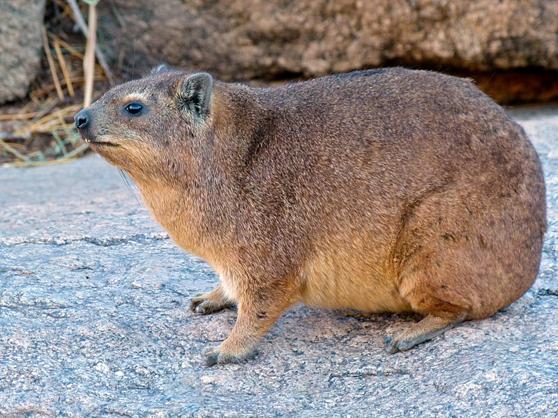

Animales asombrosos
Medusa inmortal

- Se consideran inmortales al ser uno de los contados animales conocidos capaces de revertir su
desarrollo, volviendo a una de las primeras fases de su ciclo de vida: la fase pólipo.
- Su nombre científico es Turritopsis nutricula.
- Habitan el Mar Mediterráneo y las aguas de Japón.
Pez pulmonado de Queensland

- Son peces, pero cuentan con pulmones que les permiten respirar aire como si fueran mamíferos o aves.
- Su nombre científico es Neoceratodus forsteri.
- Los peces pulmonados se consideran el eslabón evolutivo entre los peces y los anfibios.
Damán de El Cabo

- A pesar de lucir como un roedor, es uno de las especies vivas más emparentada o cercana a los
elefantes.
- Su nombre científico es Procavia capensis.
- Habitan el este de África.
- Cuentan con colmillos semejantes a los de los elefantes, los que crecen durante toda su vida.